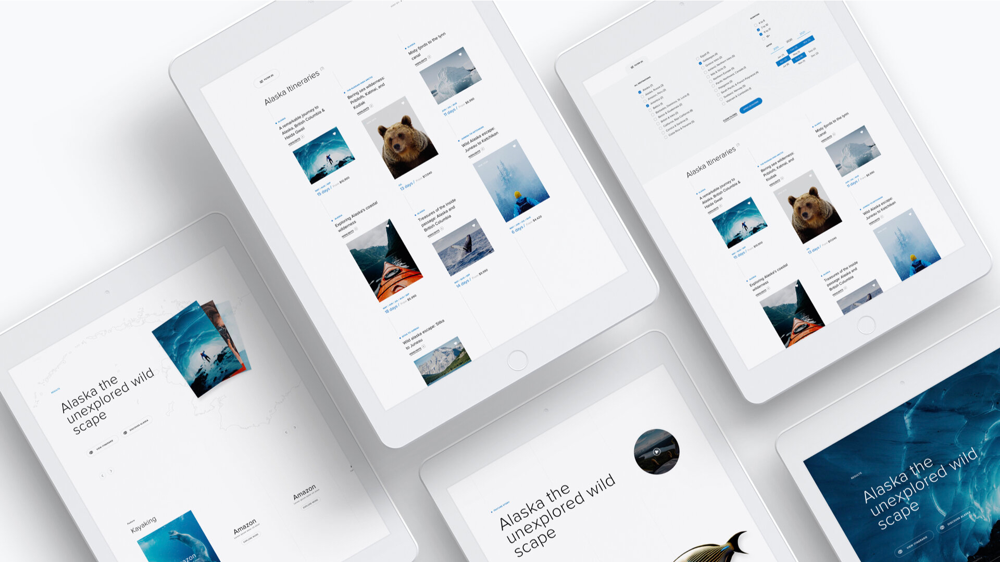
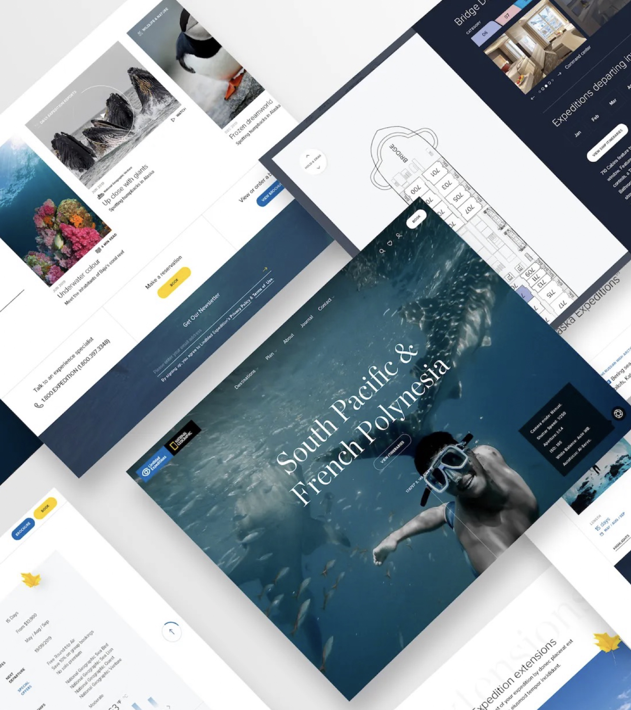
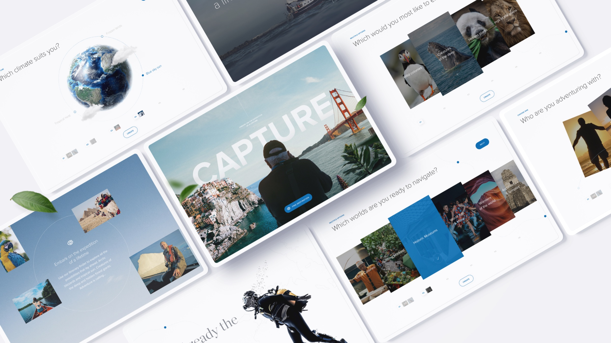

Transforming a $10k+ luxury travel booking journey
Shipped a website transformation for a NASDAQ-listed expedition cruise company against an 18-month roadmap, delivering +15% conversion, +8% AOV, and a 67% drop in customer-service contacts.
A premium product sold entirely by phone
Lindblad Expeditions is a NASDAQ-listed luxury expedition cruise company operating across 24 global destinations, with trips of 7 to 31 days led by National Geographic experts. Despite a premium product, the digital experience was not transactional: 10,000+ unstructured content pages, no online booking or checkout, phone-based sales for all transactions, and a 6–18 month consideration cycle with no digital continuity. The branding didn’t reflect the premium product, the exhilaration of discovery, or the lifelong friendships and memories the trips actually built.
Enable self-serve booking, and decision confidence with it
Enable end-to-end self-serve booking, while increasing decision confidence across a long, non-linear purchase journey. I led end-to-end product development for a two-year engagement in New York, spanning discovery, strategy, definition and delivery — aligning executive stakeholders, synthesising customer research across multiple markets, and collaborating with engineering to ship the platform.



The core problem wasn’t friction. It was uncertainty.
Removing clicks doesn’t help when a guest can’t tell whether the Galápagos in March is right for them, whether the cabin is worth the upgrade, or whether they’ll be stuck on a flight without a transfer. Confidence had to come before conversion. The work re-pointed itself: build decision support, not funnel progression.
What we built. What we didn’t.
Rebuilt IA
Replaced 10,000+ pages with structure around destination, duration and intent. Six cohorts could now filter on the axes that mattered to them.
Itinerary comparison
Tackled decision paralysis by enabling like-for-like evaluation of itineraries, day by day, side by side.
Transparent cabin selection
Removed phone-call dependency on cabin pricing by surfacing every option and price upfront.
Integrated logistics
Addressed the international cohort’s biggest blocker: flights, transfers and extensions surfaced in the same flow as the booking.
Online checkout
Closed the loop. Self-serve booking with optional human support.
Built against a six-engineer team on two-week sprints, inside an 18-month delivery window. Three planned capabilities were deferred to V2 to protect launch, and front-end content and comparison shipped ahead of pricing and commerce — so end-to-end journeys were testable before checkout was fully wired. Holding the line on scope kept the upstream work shippable.
Confidence moved upstream
Two-thirds fewer support contacts in the twelve months after launch. Guests were finding answers in the product — comparing itineraries, choosing cabins, planning logistics — without picking up the phone. Bookings ran through the same surfaces phone-led conversations used to, and logistics, extensions and cabin upgrades were merchandised in flow rather than sold over the phone.
Source: Lindblad reservations & CS data, 2021–22 · Agency partner: Matter Of Form